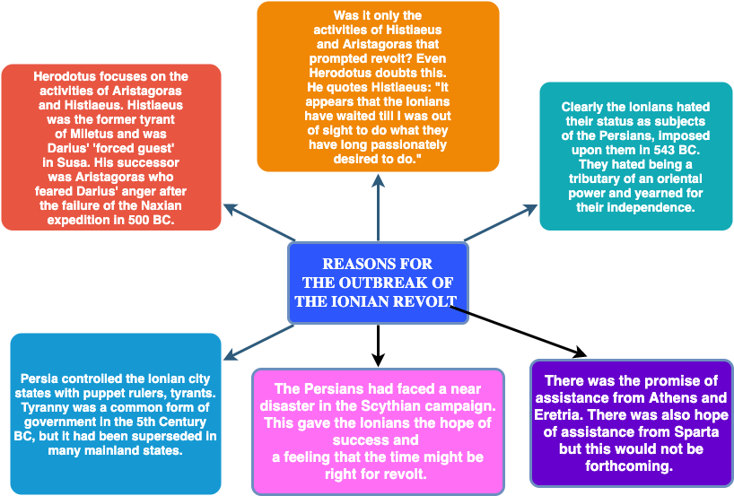

The Origins
Persian expansion, the Ionian Revolt, and the path to war
Persian Imperialism
Rise of the Persian Empire (Animated Map) — Jessica Smith
Video summary
Animated map showing the territorial expansion of the Persian Empire from Cyrus the Great through Darius I.
Between approximately 550–500 BC, Persian rulers Cyrus II, Cambyses II, and Darius I expanded their empire westward. The Persian frontier encompassed the Aegean coast of Asia Minor, some Aegean islands, and Thrace, bringing Greek city-states under Persian control.
The Scythian Campaign (513–12 BC)
Darius constructed a pontoon bridge across the Bosporus, built by engineer Mandrocles of Samos. His forces advanced through Thrace and crossed the Danube into Scythia (southern Russia).
Uncertain motivations included territorial expansion, establishing mining settlements, securing Thrace, or strategic movement around the Black Sea.
The campaign proved disastrous. Upon retreat, Scythians encouraged Greek commanders at the Danube crossing to destroy the pontoon bridge; they refused, recognising their dependence on Persian support for maintaining power.
Key Outcomes
- Megabates remained in Thrace with 80,000 troops
- Macedonian King Amyntas submitted to Persian authority
- Revolts in Chalcedon and Byzantium were suppressed
Darius appeared focused on consolidation rather than immediate Greek expansion. However, Macedonian submission demonstrated growing European interest.

The Ionian Revolt
The Ionian Revolt 499–493 BC — TopRomanFacts
Video summary
Overview of the Ionian Revolt (499–493 BC), its causes, key events, and significance as a catalyst for the Persian Wars.
This uprising functioned as the catalyst transforming potential Persian aggression into inevitable invasion.
Key Participants
Greek
- Histiaeus — Miletus tyrant, detained at Susa
- Aristagoras — Miletus tyrant, Histiaeus' son-in-law
Persian
- Darius I — Persian king
- Artaphernes — Ionian satrap, Darius' half-brother
- Megabates — Persian general
- Mardonius — commander of suppression operations, led failed 492 BC Greek attack
The Naxos Incident (501–500 BC)
Wealthy Naxian oligarchs, expelled during a democratic uprising, sought refuge in Miletus under Aristagoras' rule. Aristagoras convinced Artaphernes to launch an attack on Naxos, expecting personal control of the conquered island.
A four-month siege failed. Herodotus attributes the failure to Megabates' betrayal — allegedly warning Naxians out of personal quarrel with Aristagoras.
Consequences for Aristagoras
- Unable to fulfil financial commitments to Artaphernes
- Feared losing his Miletus position
- Received Histiaeus' message via slave bearing "revolt" tattooed on his scalp
This combination of factors — Aristagoras' precarious position, Histiaeus' encouragement, and Persian prestige damage — prompted Ionian resistance.
Course of the Ionian Revolt (499–494 BC)
499 BC: Pro-Persian tyrants were expelled. Goes of Mytilene was executed by stoning.
Aristagoras sought mainland support. Spartan King Cleomenes refused, reportedly influenced by his daughter Gorgo's warning:
"Father, you had better go away, or the stranger will corrupt you."
Athens proved receptive, sending 20 ships under Melanthius; Eretria contributed 5 ships. Athenian motivations included supporting fellow Greeks, countering former tyrant Hippias' Persian influence, and securing Black Sea trade access.
Herodotus observed that Aristagoras found it easier to convince 30,000 Athenians than one Spartan, and noted the decision's historical significance:
"The sailing of this fleet was the beginning of trouble not only for Greece, but for other peoples."
— Herodotus
Revolt Peak
The destruction of Sardis (Lydia) enraged Darius, who allegedly ordered daily reminders:
"Sire, remember the Athenians!"
Collapse
Histiaeus returned to suppress the rebellion. Artaphernes accused Histiaeus of fomenting revolt for personal restoration. Aristagoras deserted, dying in Thrace.
Battle of Lade (494 BC)
The final engagement. Persian forces surrounded Miletus with hundreds of naval vessels against 353 Greek ships. Samian (49 ships) and Lesbian (70 ships) desertion weakened Greek resistance. Miletus fell; survivors were enslaved.
Alternative Perspective: Persian View of Athens
In 507 BC, Athenian envoys presented "earth and water" (symbols of submission) to the Persian satrap in Sardis. Though repudiated domestically, Persia interpreted this as permanent submission under religious obligation to Ahura Mazda.
When Athens refused to restore Hippias and aided Ionians in 499 BC, Persia viewed this as rebellion by a vassal state. Persian military action represented reclaiming a disobedient subject rather than unprovoked aggression. This perspective frames Marathon and Xerxes' later invasion as enforcement actions.